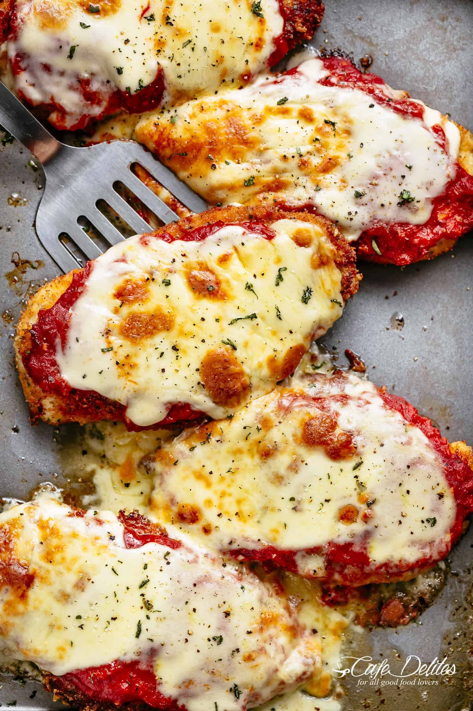

Chicken Parmigiana
Return

Description
Chicken Parmigiana is a classic Italian-American dish featuring breaded chicken breasts topped with marinara sauce and melted cheese.
Here's a quick recipe:
Ingredients
For the chicken:
- 2 large eggs
- 1 tablespoon garlic minced
- 2 tablespoons parsley fresh, chopped
- ¼ teaspoon salt to season
- 3 large chicken breasts halved horizontally to make 6 fillets
- 1 cup Panko breadcrumbs
- ½ cup breadcrumbs Italian or golden
- ½ cup parmesan cheese fresh grated
- 1 teaspoon garlic powder
- 1 teaspoon onion powder
- ½ cup olive oil for frying
For the sauce:
- 1 tablespoon olive oil
- 1 large onion chopped
- 2 teaspoons garlic minced
- 14 ounces tomato puree Passata
- ¼ teaspoon salt to taste
- ¼ teaspoon black pepper to taste
- 1 teaspoon dried Italian herbs
- 1 teaspoon sugar optional
For the toping:
- 8 ounces mozzarella cheese sliced or shredded
- ⅓ cup parmesan cheese fresh shredded
- 2 tablespoons basil or parsley, fresh, chopped
Steps:
- Whisk together eggs, garlic, parsley, salt and pepper in a shallow dish.
Add chicken into the egg, rotating to evenly coat each fillet in the mixture.
Cover with plastic wrap and allow to marinate
for at least 15 minutes (or overnight night if time allows for a deeper flavour).
- When chicken is ready for cooking, mix bread crumbs, Parmesan cheese and garlic powder together in a separate shallow bowl.
Dip chicken into the breadcrumb mixture to evenly coat.
- Preheat oven 430°F | 220°C.
Lightly grease an oven tray (or baking dish) with non stick cooking oil spray; set aside.
- Heat oil in a large skillet over medium-high heat until hot and shimmering.
Fry chicken until golden and crispy, (about 4-5 minutes each side).
- Place chicken on prepared baking tray / dish and top each breast with about ⅓ cup of sauce.
Top each chicken breast with 2-3 slices of mozzarella cheese
and about 2 tablespoons parmesan cheese. Sprinkle with basil or parsley.
- Bake for 15-20 minutes, or until cheese is bubbling and melted, and the chicken is completely cooked through.
Notes!
Tips: For this recipe, we use both chicken thighs and breasts.
Serve with pasta, mashed potato, a salad, steamed veggies, zucchini noodles or cauliflower rice for the perfect meal!